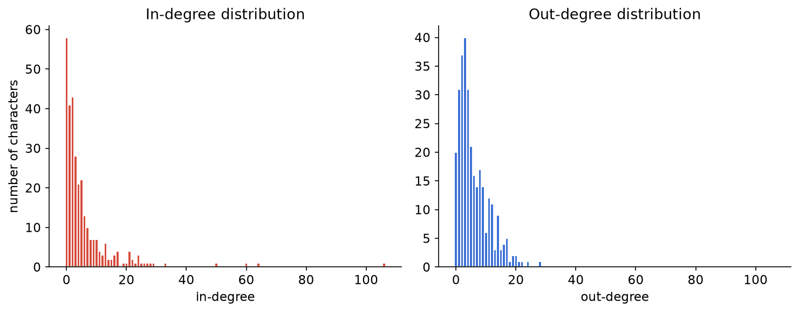
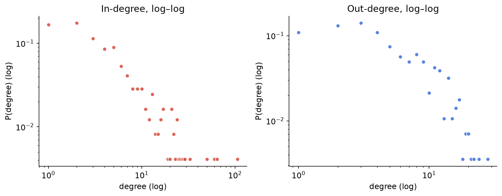
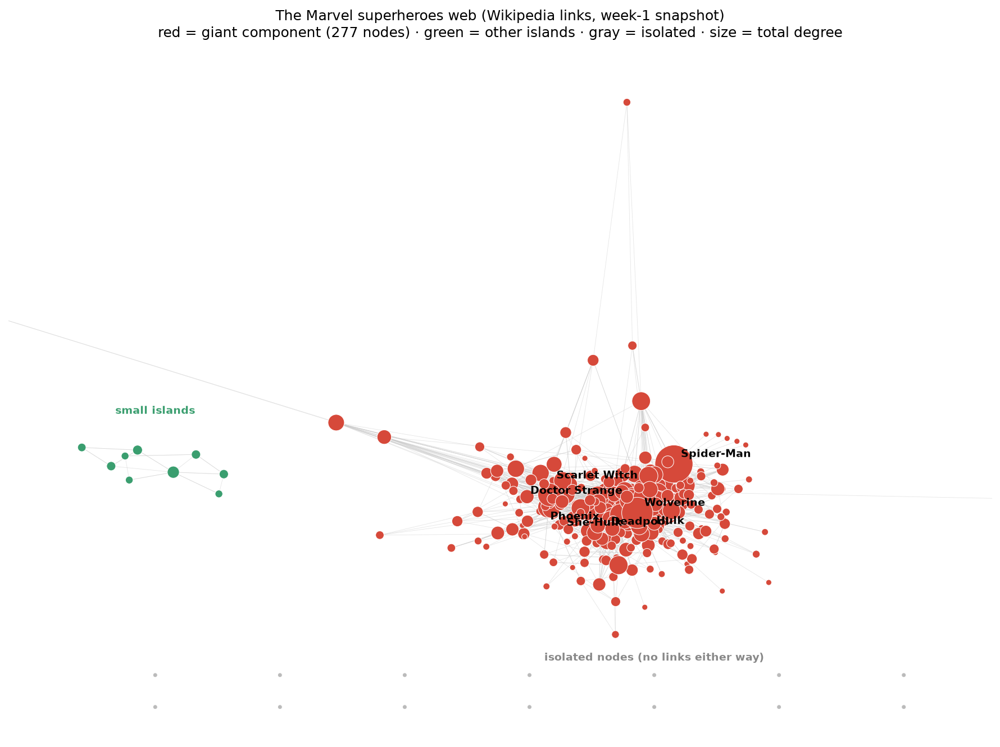

Week 1 — Bootstrap: meet the network
What we asked
Before doing anything clever, we wanted to just look at the thing: how many characters link to how many others, who's the center of gravity, and — since the assignment specifically dared us to — what's hiding outside the main mass of the network? Are the isolated nodes boring dead ends, or is there a story there?
What we did
We loaded the week‑1 snapshot of Wikipedia's Category:Marvel Comics superheroes
as a directed graph in NetworkX — one node per character, one directed edge
A → B whenever A's article links to B's — keeping all 303 nodes from the
roster file even where they have zero edges (17 of them do). Then: degree distributions,
in vs. out degree, connected components, and a full layout of the network.
Degree distributions: linear and log–log
Average degree is low (≈5.9 in, ≈5.9 out — of course these match exactly, since every edge contributes one in and one out), but the distribution is anything but uniform. The linear histograms already show the classic heavy right tail:

On a log–log scale the asymmetry between in- and out-degree becomes the real story:

In-degree has a much heavier, longer tail than out-degree (max in-degree 106 vs. max out-degree 28). That asymmetry makes sense once you think about what each direction actually measures: out-degree is bounded by editorial effort — how many links one human bothered to type into one article — so it never runs away. In-degree is bounded by nothing but fame — it accumulates one mention at a time across all 302 other articles, so a genuinely famous character can rack up mentions far beyond what any single article links out to.
Who's linked to the most, and who links out the most — and why they're different people
| Rank | Most linked-to (in-degree) | Links out the most (out-degree) |
|---|---|---|
| 1 | Spider-Man — 106 | Betsy Braddock — 28 |
| 2 | Hulk — 64 | Cloak and Dagger — 24 |
| 3 | Wolverine — 60 | Adam Warlock — 22 |
| 4 | Doctor Strange — 50 | Venom — 21 |
| 5 | Deadpool — 33 | She-Hulk — 20 |
Spider-Man alone is linked to by 106 of the other 302 characters — about a third of the entire network, exactly as the assignment teased. That's not surprising once you remember what these links are: any character whose article mentions a famous team-up, a rivalry, or "created by the same writer as" tends to namedrop Spider-Man, Hulk, or Wolverine, because those are the load-bearing celebrities of the Marvel universe on Wikipedia specifically (not necessarily in-universe power level).
The out-degree leaderboard is a completely different cast — Betsy Braddock, Cloak and Dagger, Adam Warlock. These aren't obscure characters, but they're not A-listers either. What they have in common is complicated continuity: characters with messy histories (many aliases, team memberships, retcons, related characters) end up with Wikipedia articles that link out to a lot of other pages just to explain themselves. High out-degree measures how much a character's own article needs to reference others to make sense — almost the opposite quantity from fame.
The giant component, and the islands outside it
Treating the graph as undirected, 277 of 303 characters (91%) sit in one giant connected component. Outside it: 17 fully isolated nodes, and — more interesting — exactly one small island of 9 characters that connect only to each other:
The 17 fully isolated characters are a grab-bag of the genuinely obscure: Baymax, Bird-Brain, Black Fox, Brain Drain, Breeze Barton, Captain Midlands, Charcoal, Father Time, Happy Sam Sawyer, Hellfire (J. T. Slade), Illuminator, Miracleman, Ogre, Sean and Chris, Solarman, Super Rabbit, Yo‑Yo Rodriguez. A mix of one-off / minor characters (Super Rabbit — yes, really, a Golden Age Marvel funny-animal hero) and characters whose fame lives mostly outside comics (Baymax, from Big Hero 6, is a Disney/Marvel property but pop-culturally orbits a different universe than Spider-Man's). Their articles exist, but apparently nobody linked to them and they didn't link to anyone else in this specific category page's crawl.
Drawing the whole thing
We laid the giant component out with a force-directed (spring) layout, parked the 9-node Morituri island to the side, and lined the 17 isolates up along the bottom (a force layout has nothing to pull them anywhere meaningful, so scattering them randomly just wastes canvas — better to be honest that they have no position to speak of).

Even without any layout algorithm doing anything fancy, the picture tells the whole story of this week's numbers: one dense core with a handful of unmissable hubs, one tiny separate clique, and a row of characters nobody bothered to connect at all.
What surprised us
- The heavy skew is entirely on the in-degree side — out-degree is comparatively tame (max 28 vs. max 106). We hadn't expected such a clean structural explanation (editorial effort vs. accumulated fame) to fall out of just staring at two histograms.
- The only non-trivial component outside the giant one isn't random scattering — it's a single, coherent, in-universe team (the Morituri squad) that Wikipedia's editors apparently treat as its own bubble.
- Isolation doesn't mean "least notable" in any simple sense — Miracleman and Baymax are both isolated despite having substantial real-world fame; they're just fame that doesn't route through this category's link structure.
Reproducing it
Loading the snapshot needs one small gotcha handled: the edge file's header row is itself comment-prefixed (# source target), so a naive comment="#" read will eat the header along with the real comments and desync your column names. We skip the leading # block by hand and name columns explicitly:
import pandas as pd, networkx as nx
def n_leading_comment_lines(path):
with open(path) as f:
n = 0
for line in f:
if not line.startswith("#"):
break
n += 1
return n
# nodes.tsv: real header row is NOT "#"-prefixed -> skip comments, keep header
nodes = pd.read_csv("week1_nodes.tsv", sep="\t",
skiprows=n_leading_comment_lines("week1_nodes.tsv"))
# edges.tsv: real header row IS "#"-prefixed ("# source\ttarget") -> skip
# the comments *and* that header line, and name columns explicitly.
edges = pd.read_csv("week1_edges.tsv", sep="\t",
skiprows=n_leading_comment_lines("week1_edges.tsv"),
names=["source", "target"])
G = nx.DiGraph()
G.add_nodes_from(nodes["node_id"]) # keeps the 17 isolates!
G.add_edges_from(zip(edges["source"], edges["target"]))
Full analysis script: analysis/week1_analysis.py in the repo.
Stretch goal: checking the snapshot against live Wikipedia
Rather than trust the snapshot blindly, we hit the live Wikipedia API
(action=query, list=categorymembers and
prop=linkshere) with a proper User-Agent header (Wikipedia
will 403 you without one) and re-derived two numbers from scratch: how big
Category:Marvel Comics superheroes is today, and how many category members
currently link to Spider-Man.
| Quantity | Week‑1 snapshot (2026‑08‑26) | Live, checked 2026‑09‑21 |
|---|---|---|
| Direct category members | 303 | 363 |
| Spider-Man in-degree (within category) | 106 | 222 |